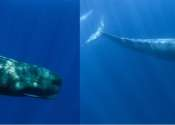

Blue whales "rediscover" South Georgia British Antarctic Survey on Blue whales found in South Georgia Sound reveals giant blue whales dance with the wind to find food

Warming oceans may force New Zealand's sperm and blue whales to shift to cooler southern waters Bomb detectors picking up more blue whale songs in Indian Ocean

Exploring the murky history of the chase for the blue whale Sound provides new insight into the lives of blue whales First records of killer whales successfully hunting largest animals on Earth